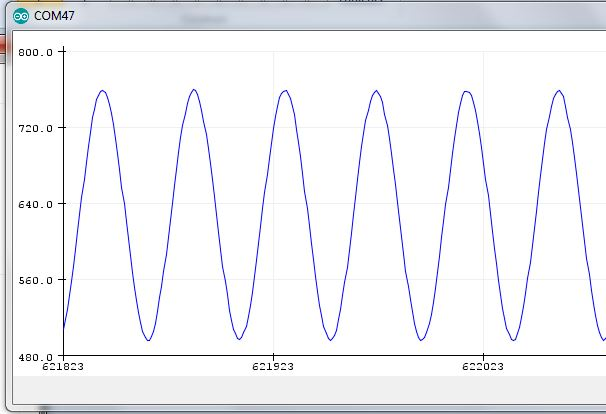

IOT EPS curent Sensing¶
Sommaire
For sensor choice see hardware documentation.
Curent Sensing aborted for now see hardware documentation
Avertissement
Current sensing was aborted due to sensor choice
AC mesurement¶
Module AC on AliExpress 1 with voltage lower transformer
Usage example on Youtube chanel of SurtrTech 2
Fortunately, the guy made a site! SurtrTech 3
Librairie filtre pour les calculs RMS 4 on ARDUINO absolutly not documented !
No documentation for this library of Jonathan Driscoll 5
But luckily among the 40 forks a user wrote a doc, Edgar Bonet 6
It is more of a presentation than actual documentation.
Première mesure¶
#define RSSPEED 115200
void setup(){
Serial.begin( RSSPEED );
//Serial.println( "Sketch start...");
}
void loop(){
Serial.println( analogRead(A0) );
}
To check if all is right !
{kind=link}
Example of usage of the library filtre.h¶
/* This code works with ACS712 current sensor, it permits the calculation of the signal TRMS
* Visit www.surtrtech.com for more details
*/
#include <Filters.h> //This library does a massive work check it's .cpp file
#define ACS_Pin A0 //Sensor data pin on A0 analog input
float ACS_Value; //Here we keep the raw data valuess
float testFrequency = 50; // test signal frequency (Hz)
float windowLength = 40.0/testFrequency; // how long to average the signal, for statistist
float intercept = 0; // to be adjusted based on calibration testing
float slope = 0.0752; // to be adjusted based on calibration testing
//Please check the ACS712 Tutorial video by SurtrTech to see how to get them because it depends on your sensor, or look below
float Amps_TRMS; // estimated actual current in amps
unsigned long printPeriod = 1000; // in milliseconds
// Track time in milliseconds since last reading
unsigned long previousMillis = 0;
void setup() {
Serial.begin( 9600 ); // Start the serial port
pinMode(ACS_Pin,INPUT); //Define the pin mode
}
void loop() {
RunningStatistics inputStats; // create statistics to look at the raw test signal
inputStats.setWindowSecs( windowLength ); //Set the window length
while( true ) {
ACS_Value = analogRead(ACS_Pin); // read the analog in value:
inputStats.input(ACS_Value); // log to Stats function
if((unsigned long)(millis() - previousMillis) >= printPeriod) { //every second we do the calculation
previousMillis = millis(); // update time
Amps_TRMS = intercept + slope * inputStats.sigma();
Serial.print( "\t Amps: " );
Serial.print( Amps_TRMS );
}
}
}
/* About the slope and intercept
* First you need to know that all the TRMS calucations are done by functions from the library, it's the "inputStats.sigma()" value
* At first you can display that "inputStats.sigma()" as your TRMS value, then try to measure using it when the input is 0.00A
* If the measured value is 0 like I got you can keep the intercept as 0, otherwise you'll need to add or substract to make that value equal to 0
* In other words " remove the offset"
* Then turn on the power to a known value, for example use a bulb or a led that ou know its power and you already know your voltage, so a little math you'll get the theoritical amps
* you divide that theory value by the measured value and here you got the slope, now place them or modify them
*/
End
How it is possible ?¶
On Wikipedia, we learn that the standard deviation (sigma) is equivalent to RMS value. And filter library has an statisitc modul that provide sigma !